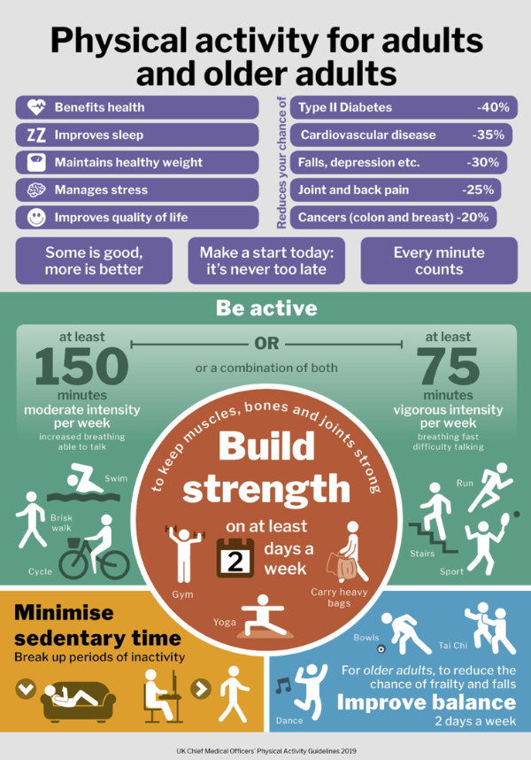

To succeed with any behavioural change, it’s helpful to think where you are starting from so that your goals are both achievable and meet your needs. This activity is designed to help you review your present physical activity levels over the last 7 days. By recording this information, you will be able to track your progress over the next few weeks and make achievable plans that can work best for you.
The Chief Medical Officers in the UK have published guidance on the amount, intensity and type of physical activity people should be doing to improve their health.
The report makes physical activity recommendations for various age groups. The guidelines for adults and older adults are summarised below:
